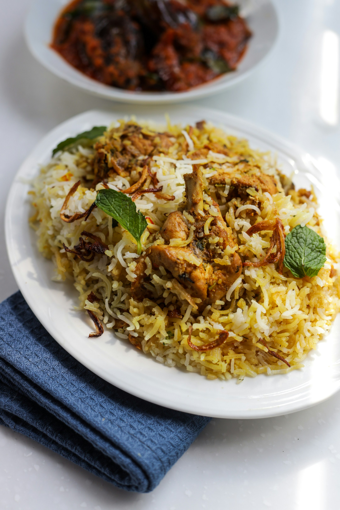

Biryani

Description
Biryani is a celebrated South Asian mixed rice dish made with basmathi
rice, fragrant spices, and protiens like chicken, mutton, beef and vegetables.
- Chichen
- Yogurt
- Aromatics
- Spices
- Herbs
- Basmathi Rice
- Whole spices
- Onions
- Ghee
- Saffron
- Water
- Prepare the marinade
- Fry the onions
- Cook the rice
- Cook the chicken
- Layer the Biryani
- Dum cooking
- Serve